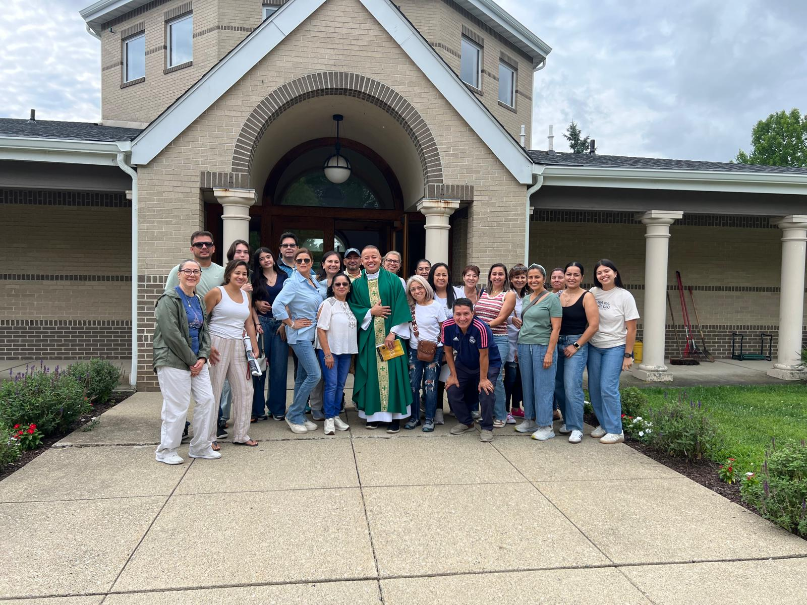

Momentos de servicio y fraternidad de nuestra comunidad hispana.

Nuestra comunidad hispana junto al Padre Yohan Serrano, celebrando el lanzamiento de los ministerios de servicio voluntario de San Vicente Mártir.

Jornada de formación y encuentro fraterno en la naturaleza, donde los miembros se reunieron para escuchar, reflexionar y crecer juntos en la fe.

Nuestra comunidad celebró a las madres con una Misa especial y claveles rojos dentro de la hermosa iglesia de San Vicente Mártir.

Los padres de nuestra comunidad hispana se reunieron para celebrar su día con pastel, fraternidad y mucha alegría.

Jóvenes de nuestra comunidad frente a San Vicente Mártir. Si tienes entre 12 y 25 años, Juventud Viva te espera.

Nuestra comunidad realizó una visita espiritual a Washington, NJ — una jornada de fe, encuentro y alegría compartida con el Padre Yohan Serrano.
Septiembres de fe, servicio y comunidad. Todos están invitados.
Cada ministerio tendrá su stand para representar sus bondades y atraer a la comunidad a unirse. Una celebración de servicio, talentos y vocación al alcance de todos.
De nuevo cada ministerio tendrá su stand para representar sus bondades y atraer a la comunidad a unirse.
Una vez más cada ministerio tendrá su stand para representar sus bondades y atraer a la comunidad a unirse.
Una última oportunidad en que cada ministerio tendrá su stand para representar sus bondades y atraer a la comunidad a unirse.